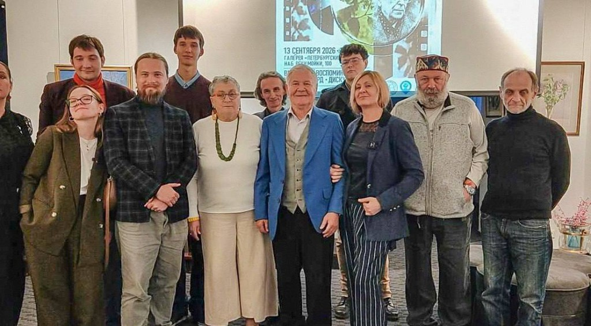

15
сентября
2026

«Оптика образа» состоялась
13 сентября в галерее «Петербургский художник» прошла кураторская программа Музея философии «Оптика образа», ставшая продолжением фестиваля «Поэзия садов академика Лихачёва».
Читать далее